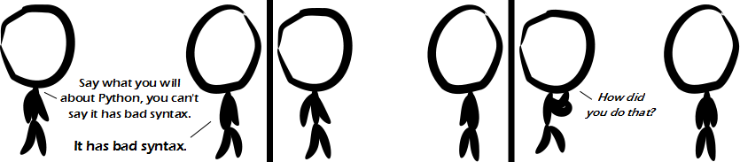

Comic JK 886
When I Feel Like It
⇤
<
?
>
⇥

⇤
<
?
>
⇥
Forum
.
RSS
.
Digg
.
Facebook
.
Reddit
.
Twitter
.
Stumbleupon
is it just me or does the 2to3 program do essentially nothing? I tried to convert a few files but the still fail to run under python 3 >me too! print("First Line") # it's a function, nimrod. Enter your thoughts on number 886 here. Please, no spamming, trolling, phreaking, or python aka bad syntax. Drink vodka though. Lots and lots of vodka. >Have you (the person who edits the first line) ever realized that nobody pays attention to it? >> Obviously that's not true, as YOU paid attention to it. >>>And it's not just one person... it's many. >>>>there's a first line? >>>>>I was under the assumption that it was the author that did it, since it's always unique no matter how soon I read the comic as soon as it enters my feed. >>>>>>Same here Your pony has bad syntax. >Fluttershy has no bad syntax! D:< >>Rarities syntax is always perfect, however she tends to insert additional lines for clarity and style that are not present in the highly optimized and neat code of, for example, twilight. Rainbow dashes codes in assembly, but occasionally forgets to release memory. this results in incredibly fast code that is sloppy and slowly fills up your ram. Pinkie writes Brainf*ck that produces psychedelic guis in about 5 characters. don't ask how, it's pinkie. Applejack is a sysadmin who writes sh/sed/awk scripts that just get the job done. >>>But The Great and Powerful Trixie is the best coder. >>>>Toooooo much LSD, ponies, and code. >>>>>Never enough pony. Never enough. My Little Pony is the Justin Bieber of memes. i { dont { get() it } } Remember everypony, Python supports curly brackets. if a #{ doStuff() breakYourCode() #} > if a :#{ doStuff() breakYourCode() #} I just typed "import denial" print #define q [v+a] #define c b[1] #define O 1 q #define o 0 q #define r(v,a )v<0&&( v*=-1, a*=-1); #define p(v,m, s,w)*c==*#v?2 q <m?(c++ ,d=1,3 q=0,5 q=m,main (a+3,b) ,o=o*s q,O=O* w q):0: static d,v[99 ];main (int a, char**b ){d=7; if(*c?! (p(+,3 ,4 q+O* 3,4)p( -,(o?3 :(O=1,6 )),4 q -O*3,4) p(*,4,3 ,4)p(/ ,5,4,3) p((),d, 0+3,0+ 04)*c== ')'?2 q <02?(c ++,0):0 :(o=012 *o+*c- '0',c++ 1;d=a,r (o,d)r (O,d)3 q =o<O?(4 q=o,O) :(4 q=O, o);r(d, o)a+=3;O? 1:(O=1,2 q=1);while (2 q=o%1 q)a++;v[d]/=O;d[ v+1]/=O;return main(d,b);} >Hamre, 2006, International Obfuscated C Code Contest. Evaluates expressions input as the first argument and outputs a rational number. Won "Most Irrational" prize. You left the tab characters when you copy-pasted it. >> The tabs don't seem to break the alignment, so what's your point? >>> None, I just thought everyone agreed that alignment should always be done with spaces. >>>> Sure, that way, if someone has a small/narrow display, they just run the equivalent of vim :%s/ / /g. If someone else then edits the code on a bigger display and wants to take advantage of that, :%s/ / /g. This works, without changing anything unrelated to indent, assuming there's no double space anywhere else in your code. Or, you can use a tab character, invented for this very purpose, so that a text editor properly set up for a particular display creates the best effect without changing the file. I like python, but PEP 8's only merit regarding spaces vs. tabs imo is that it makes a choice, allowing consistency. However, in the example above, spaces would clearly be superior, because in ASCII art, tabs are notoriously (and intentionally) unreliable. >>>>>K. Uh huh